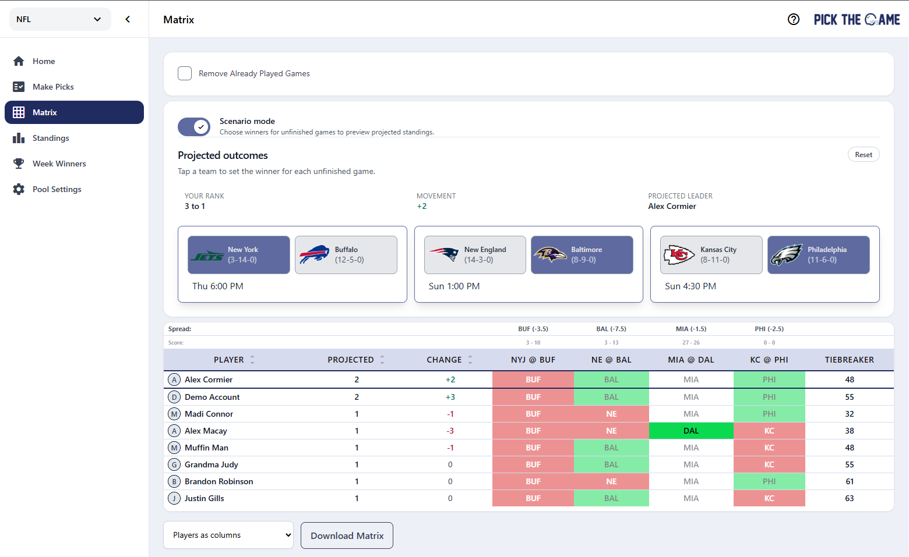

See the week from every angle
When the week gets tight, every unfinished game can change the standings. Scenario mode lets you use Matrix view to see how different results could play out before they happen.
This makes it easier to follow late-week drama, compare paths for different players, and understand what outcomes help or hurt your spot in the pool.
What Scenario mode helps you do
- Test possible outcomes: try different winners and see how the week could shift.
- Read the standings faster: understand who benefits from each remaining game.
- Follow the race live: use it as a clean companion to the Matrix page when the leaderboard gets tight.
Built right into Matrix view
Scenario mode lives where many players already compare picks: the Matrix page. That means you can move from pick-by-pick comparison to outcome-based thinking without leaving the page or rebuilding the picture in your head.

Why we built it
Matrix view already makes it easy to compare who picked what. Scenario mode adds the next question players naturally ask: "What happens if this team wins?"
By making that question easier to answer, Scenario mode turns late-week scoreboard watching into something more useful, more strategic, and a lot more fun for close pools.
Open Matrix view and try Scenario mode the next time your pool comes down to the final games.